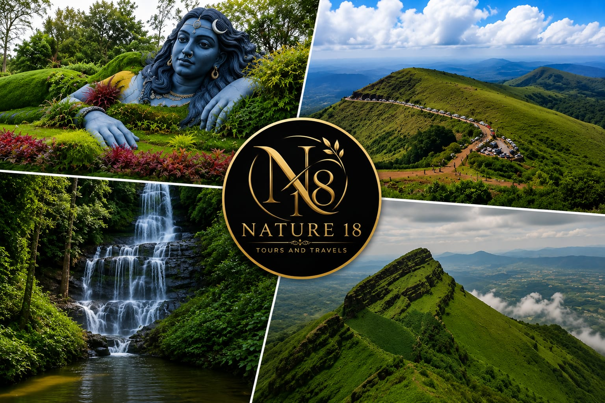
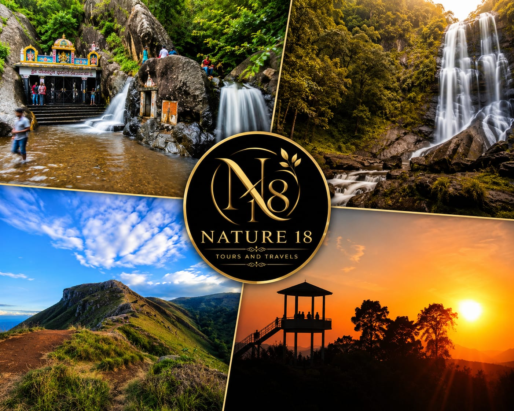
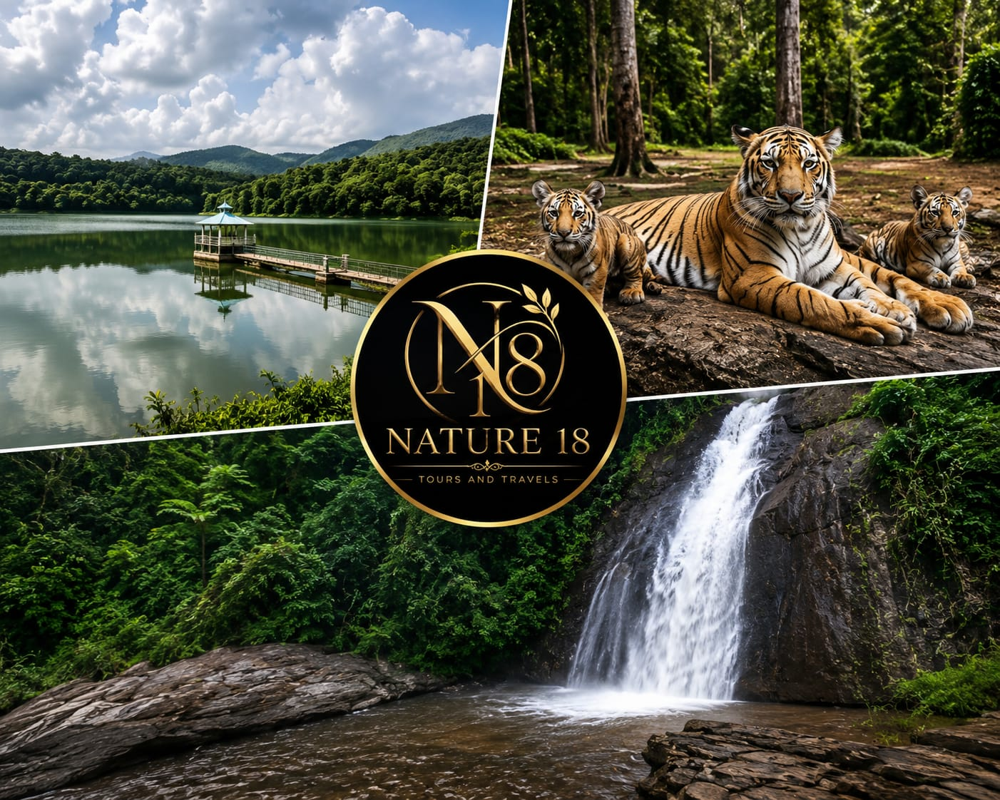
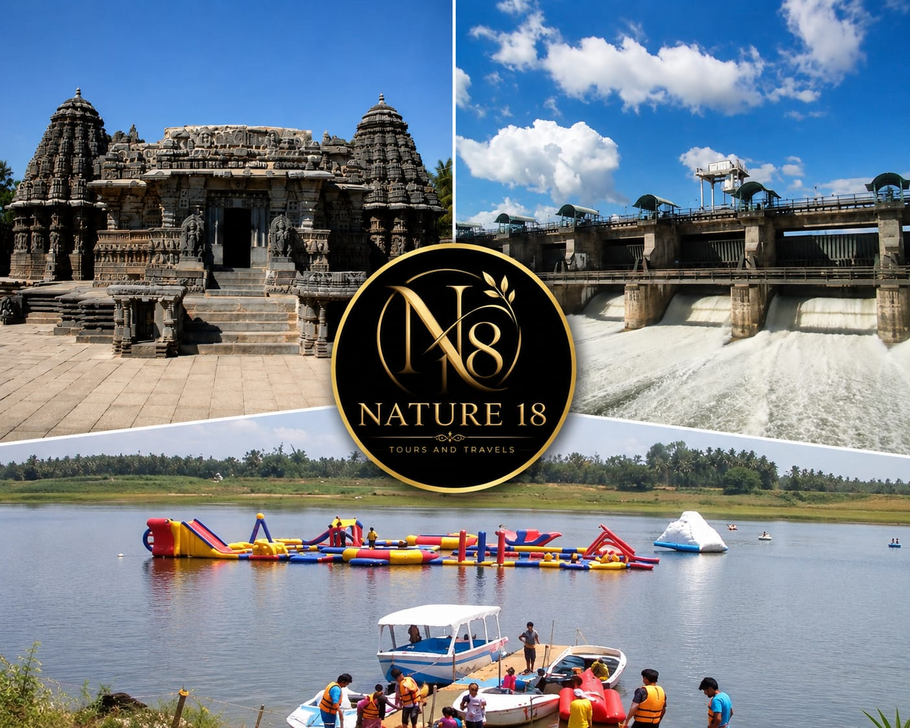
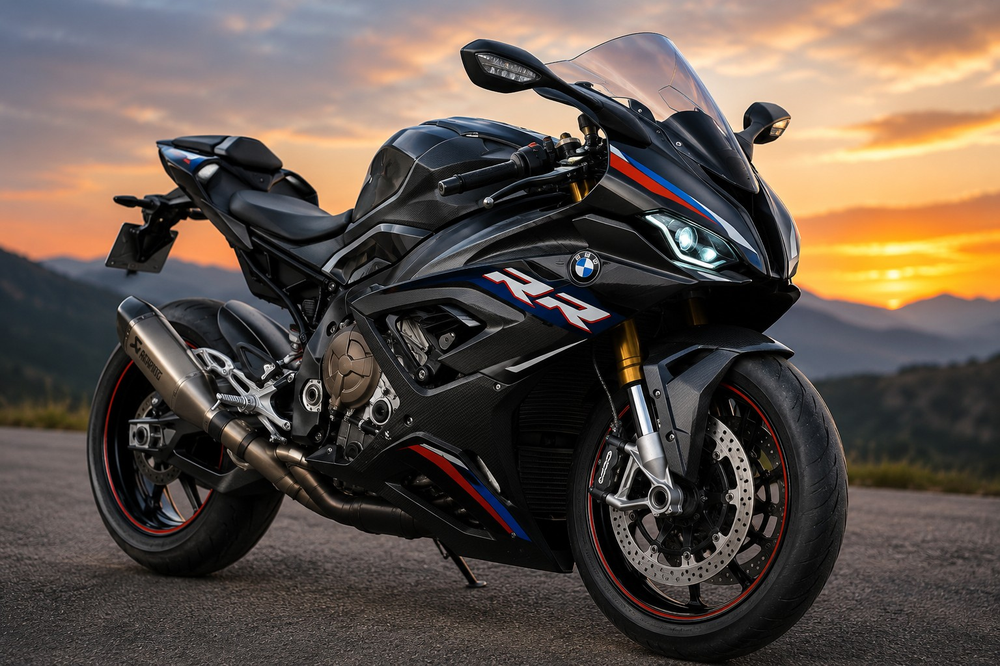
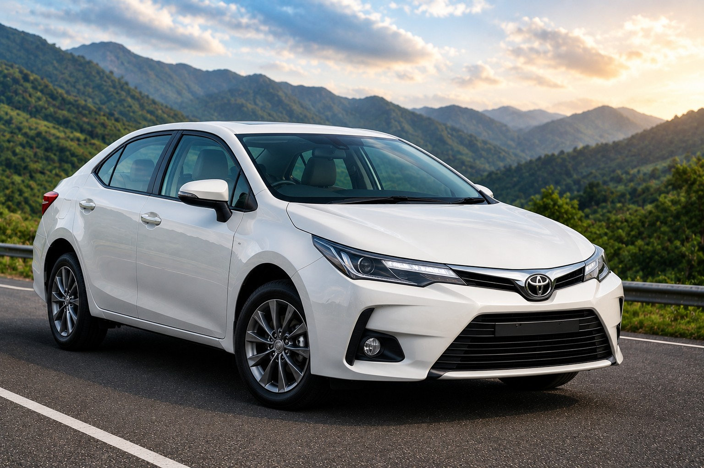
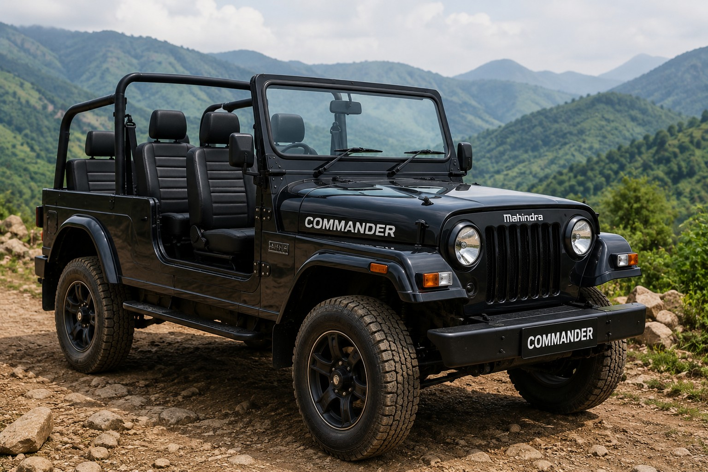
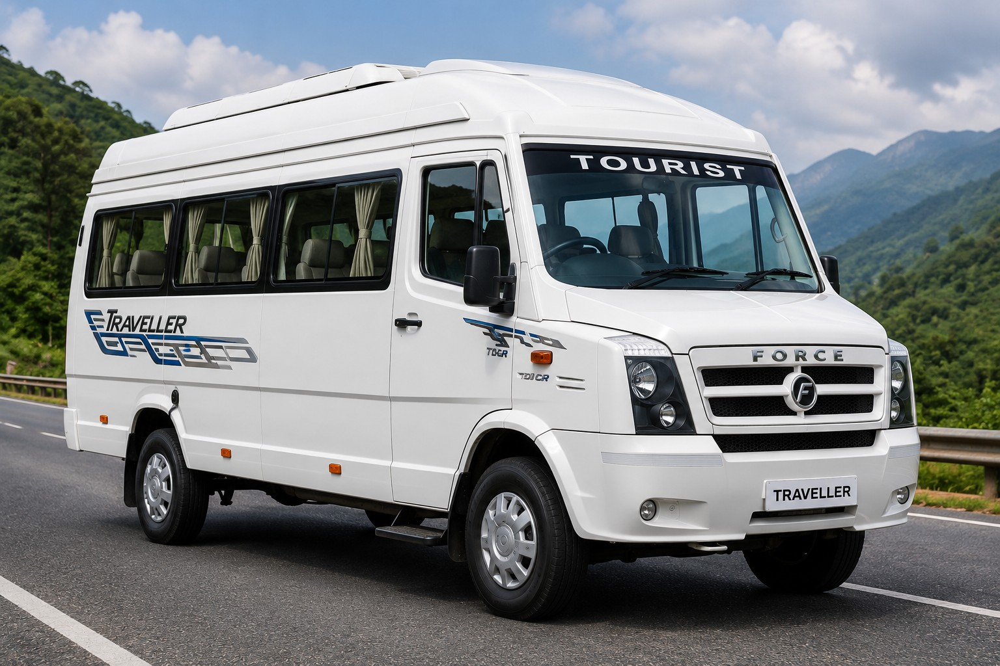
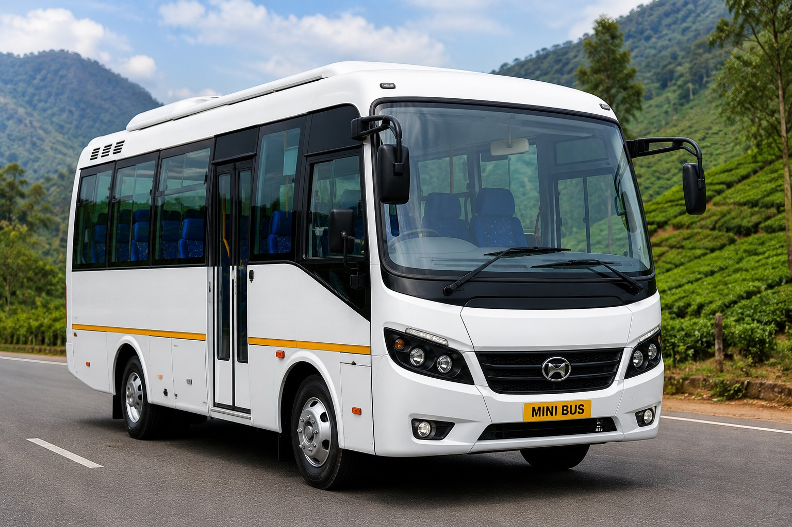
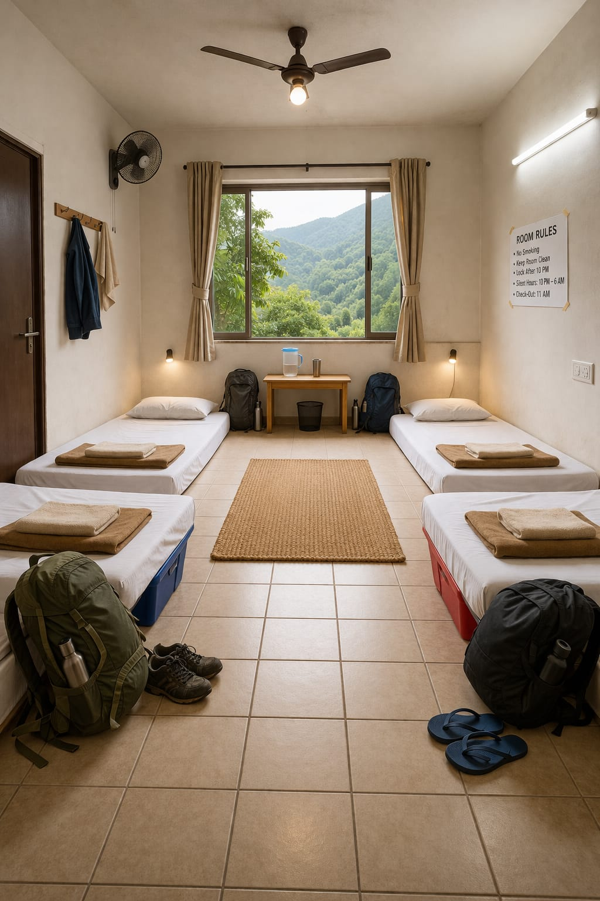

NATURE 18 Tours and Travels is a locally operated travel service dedicated to providing complete and hassle-free tour packages for visitors exploring the beauty of Chikkamagaluru and across Karnataka.
We specialize in well-planned tour packages that include jeep trekking, food, and stay, making it easy for our customers to enjoy their trip without worrying about transport, meals, or accommodation.
With strong local knowledge and experience, we take you to popular tourist destinations as well as less-crowded scenic locations.
Customer safety, comfort, and satisfaction are our top priorities with well-maintained jeeps and reliable stays.
Our goal is to give you a relaxed, memorable, and value-for-money travel experience.
We also provide special tour and travel services on request for Kalasa, Kemmanagundi, Horanadu, Sringeri, Shivamogga, Sakleshpur, Mangalore, Dandeli, Mysore, Bangalore, Ooty, Madikeri/Coorg, Hampi, Badami, Pattadakallu, Vijayanagara, Gokarna, Udupi, Murudeshwar, Agumbe, Kodaikanal, Kudremukh, Karwar, Bidar, Belgaum, and across Karnataka.
We are specialists in handling tourists and passengers from Karnataka, Kerala, Tamil Nadu, Andhra Pradesh, Telangana, Goa, Puducherry, and Maharashtra.
We also provide reliable Self-Drive Car Rental and Taxi Services for local sightseeing, airport transfers, outstation trips, and corporate travel. Our well-maintained vehicles and professional service ensure a safe, comfortable, and convenient travel experience. Flexible rental and taxi options are available to suit individual, family, and group travel needs.




NATURE 18 Tours and Travels offers reliable Self Drive Vehicle Rental and Taxi Services for travelers, families, tourists, and corporate clients across Karnataka and South India. Whether you need transportation for local travel, sightseeing, airport transfers, business trips, family vacations, pilgrimages, or long-distance journeys, we provide safe, comfortable, and affordable travel solutions.
Our fleet includes Bikes, Scooters,Jeeps Hatchbacks, Sedans, SUVs, MUVs, Tempo Travellers, Mini Buses, Tourist Buses, Luxury Vehicles, and other rental vehicles to suit every travel requirement and group size. Customers can choose self-drive vehicles for complete travel freedom or chauffeur-driven taxi services for a relaxed and hassle-free journey. From solo travelers and couples to large families, corporate groups, and tour groups, we have the right vehicle for every occasion.
All our vehicles are regularly maintained, clean, and equipped to ensure a safe and comfortable travel experience. Our experienced drivers are familiar with major tourist destinations and routes, helping customers enjoy a smooth and stress-free journey.
Whether you are planning a short local trip, a weekend getaway, a business visit, or a long vacation, NATURE 18 Tours and Travels is committed to providing dependable transportation services with flexible rental options, competitive pricing, and excellent customer support.





Our tour packages include three meals a day, covering breakfast, lunch, and dinner for all guests. Food is provided based on customer preferences to ensure a comfortable dining experience.
Both vegetarian and non-vegetarian options are available. Meals are arranged from trusted local restaurants, lodges, or homestays with a strong focus on quality and hygiene.
Food availability may vary depending on location and season, but we ensure that every guest is well served and satisfied throughout the entire tour experience.
Our tour packages include comfortable stay arrangements in well-maintained lodges or homestays, depending on availability and customer requirements.
Stay options are suitable for families, friends, and group travelers. Rooms are provided with basic amenities to ensure a comfortable and relaxing rest after a full day of jeep trekking and sightseeing.
Most stay locations are carefully selected near tour routes to reduce travel time and give you more time to enjoy.

Connect With Us